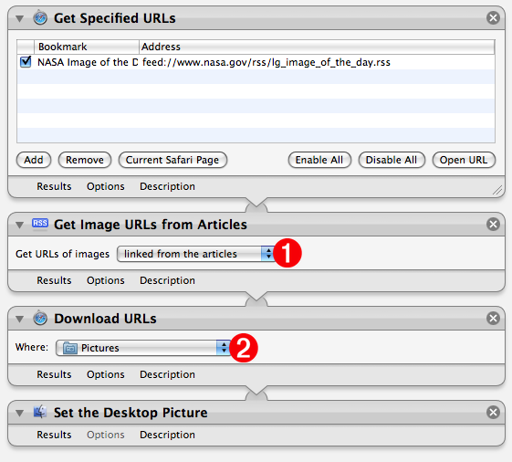

Tutorial 03: Building the Workflow
Next, locate and add the Get Image URLs from Articles action, found in the Internet library category, to the end of the workflow. This action will parse the passed RSS feeds and extract any image links from their text. Since you want to download the full-sized image, and not any thumbnail image linked to the full-sized image, select the “linked from the articles” menu item from the popup menu in the action view (#1-see below). The URL to the large linked image will be passed to the next action when the workflow is run.
Next, add the Download URLs action, also found in the Internet library category, to the end of the workflow. Choose a destination folder for the downloaded image from the popup menu in the action view (#2-see below). This action will download images files linked from the URLs passed from the previous action, and place them in the destination folder. The result of this action will be a list of file references to the download files, that are passed to the next action in the workflow.
The final action in the workflow wil be one for setting the desktop picture to the downloaded image file. Locate and add the Set Desktop Picture action (in the Files & Folders library) to the end of the workflow.
The workflow is now complete. Test the workflow by clicking the Run button at the top right of Automator window. The current NASA image will be downloaded and assigned as your desktop picture.
Continue to the next page to find out how to save the workflow as a repeating iCal event.
